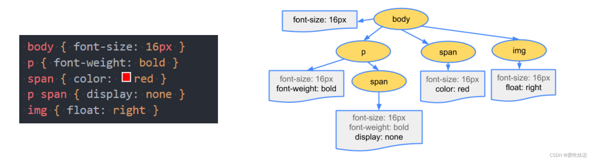

浏览器内核
浏览器内核主要分成两部分：
渲染引擎：职责就是渲染，即在浏览器窗口中显示所请求的内容。默认情况下，渲染引擎可以显示 html、xml 文档及图片，它也可以借助插件显示其他类型数据，例如使用 PDF 阅读器插件，可以显示 PDF 格式。
JS 引擎：解析和执行 javascript 来实现网页的动态效果。
最开始渲染引擎和 JS 引擎并没有区分的很明确，后来 JS 引擎越来越独立，内核就倾向于只指渲染引擎。
浏览器渲染过程
- 首先解析收到的文档，根据文档定义构建一棵 DOM 树，DOM 树是由 DOM 元素及属性节点组成的。
- 对 CSS 进行解析，生成 CSSOM 规则树。
在解析的过程中，如果遇到CSS的link元素，那么会由浏览器负责下载对应的CSS文件。 注意：下载CSS文件是不会影响DOM的解析的；浏览器下载完CSS文件后，就会对CSS文件进行解析，解析出对应的规则树，我们可以称之为 CSSOM（CSS Object Model，CSS对象模型）；

- 根据 DOM 树和 CSSOM 规则树构建渲染树。
渲染树的节点被称为渲染对象，渲染对象是一个包含有颜色和大小等属性的矩形，渲染对象和 DOM 元素相对应，但这种对应关系不是一对一的，不可见的 DOM 元素不会被插入渲染树。还有一些 DOM元素对应几个可见对象，它们一般是一些具有复杂结构的元素，无法用一个矩形来描述。
注意：link元素不会阻塞DOM Tree的构建过程，但是会阻塞Render Tree的构建过程，这是因为Render Tree在构建时，需要对应的CSSOM Tree。
当渲染对象被创建并添加到树中，它们并没有位置和大小，所以当浏览器生成渲染树以后，就会根据渲染树来进行布局（也可以叫做回流）。这一阶段浏览器要做的事情是要弄清楚各个节点在页面中的确切宽度、高度和位置信息，通常这一行为也被称为“自动重排”。
布局阶段结束后是绘制阶段，遍历渲染树并调用渲染对象的 paint 方法将它们的内容显示在屏幕上，绘制使用 UI 基础组件。
- 在绘制阶段，浏览器将布局阶段计算的每个frame转为屏幕上实际的像素点；
- 包括将元素的可见部分进行绘制，比如文本、颜色、边框、阴影、替换元素（比如img）。
大致过程：
注意：这个过程是逐步完成的，为了更好的用户体验，渲染引擎将会尽可能早的将内容呈现到屏幕上，并不会等到所有的html 都解析完成之后再去构建和布局 render 树。它是解析完一部分内容就显示一部分内容，同时，可能还在通过网络下载其余内容。
回流-重绘-合成
- 回流
另一个叫法是重排，回流触发的条件就是：对DOM结构的修改引发DOM几何尺寸的变化的时候，会发生回流过程。
具体有以下的操作会触发回流：
- 一个DOM元素的几何属性变化，常见的几何属性有width、height、padding、margin、left、top、border等
- 使DOM节点发生增减或者移动
- 窗口resize（修改了窗口的尺寸等）
- 调用getComputedStyle方法获取尺寸、位置信息
- 读写offset族、scroll族和client族属性的时候，浏览器为了获取这些值，需要进行回流操作。
一些常用且会导致回流的属性和方法：
- 调用window。getComputedStyle方法
- clientWidth、clientHeight、clientTop、clientLeft
- offsetWidth、offsetHeight、offsetTop、offsetLeft
- scrollWidth、scrollHeight、scrollTop、scrollLeft
- scrollIntoView()、scrollIntoViewIfNeeded()
- getComputedStyle()
- getBoundingClientRect()
- scrollTo()
- 重绘
当页面中元素样式的改变并不影响它在文档流中的位置时（例如：color、background-color、visibility等），浏览器会将新样式赋予给元素并重新绘制它，这个过程称为重绘。
根据概念，我们知道由于没有导致 DOM 几何属性的变化，因此元素的位置信息不需要更新，从而省去布局的过程。
具体有以下的操作会触发重绘：
比如修改背景色、文字颜色、边框颜色、样式等；
重绘不一定导致回流，但回流一定发生了重绘，所以回流是一很消耗性能的事情。
- composite合成
还有一种情况：就是更改了一个既不要布局也不要绘制的属性，那么渲染引擎会跳过布局和绘制，直接执行后续的合成操作，这个过程就叫合成。
举个例子：比如使用CSS的transform来实现动画效果，避免了回流跟重绘，直接在非主线程中执行合成动画操作。显然这样子的效率更高，毕竟这个是在非主线程上合成的，没有占用主线程资源，另外也避开了布局和绘制两个子阶段，所以相对于重绘和重排，合成能大大提升绘制效率。
默认情况下，标准流中的内容都是被绘制在同一个图层（Layer）中的；而一些特殊的属性，会创建一个新的合成（CompositingLayer ），并且新的图层可以利用GPU来加速绘制，因为每个合成层都是单独渲染的。
常见可以形成新的合成层的属性：
- 3D transforms
- video、canvas、iframe
- opacity 动画转换时
- position: fixed
- will-change：一个实验性的属性，提前告诉浏览器元素可能发生哪些变化
- animation 或 transition 设置了opacity、transform
浏览器渲染优化
- 针对JavaScript
JavaScript既会阻塞HTML的解析，也会阻塞CSS的解析。因此我们可以对JavaScript的加载方式进行改变，来进行优化：
- 尽量将JavaScript文件放在body的最后
- body中间尽量不要写
<script>标签 <script>标签的引入资源方式有三种，有一种就是我们常用的直接引入，还有两种就是使用 async 属性和 defer 属性来异步引入，两者都是去异步加载外部的JS文件，不会阻塞DOM的解析（尽量使用异步加载）。三者的区别如下：
（1）script 立即停止页面渲染去加载资源文件，当资源加载完毕后立即执行js代码，js代码执行完毕后继续渲染页面。
（2）async 是在下载完成之后，立即异步加载，加载好后立即执行，多个带async属性的标签，不能保证加载的顺序。
（3）defer 是在下载完成之后，立即异步加载。加载好后，如果 DOM 树还没构建好，则先等 DOM 树解析好再执行；如果DOM树已经准备好，则立即执行。多个带defer属性的标签，按照顺序执行。
- 针对CSS
css要放在顶部，它不会阻塞html的解析
使用CSS有三种方式：使用link、@import、内联样式，其中link和@import都是导入外部样式。它们之间的区别：
link：浏览器会派发一个新的线程(HTTP线程)去加载资源文件，与此同时GUI渲染线程会继续向下渲染代码
@import：GUI渲染线程会暂时停止渲染，去服务器加载资源文件，资源文件没有返回之前不会继续渲染(阻碍浏览器渲染)
style：GUI直接渲染
外部样式如果长时间没有加载完毕，浏览器为了用户体验，会使用浏览器会默认样式，确保首次渲染的速度。所以CSS一般写在head中，让浏览器尽快发送请求去获取css样式。
所以，在开发过程中，导入外部样式使用link，而不用@import。如果css少，尽可能采用内嵌样式，直接写在style标签中。
style样式解析
style中的样式不解析完毕，页面不会渲染。
- 由html解析器解析
- 不会阻塞浏览器渲染，但可能出现闪屏现象
- 不会阻塞DOM解析
通过style标签引入会一般解析，一边渲染。
link引入
- link进来的样式，由css解析器去解析，并且是同步解析的。
- css解析器会阻塞页面的渲染。(link引入的外部样式会阻塞页面渲染，可以利用这种阻塞避免”闪屏现象”)
- 推荐使用link引入样式。
- 阻塞后面的js语句的执行
- 针对DOM树、CSSOM树
可以通过以下几种方式来减少渲染的时间：
- HTML文件的代码层级尽量不要太深
- 使用语义化的标签，来避免不标准语义化的特殊处理
- 减少CSSD代码的层级，因为选择器是从左向右进行解析的
- 减少回流和重绘
- 操作DOM时，尽量在低层级的DOM节点进行操作
- 不要使用table布局， 一个小的改动可能会使整个table进行重新布局
- 使用CSS的表达式
- 不要频繁操作元素的样式，对于静态页面，可以修改类名，而不是样式。
- 使用absolute或者fixed，使元素脱离文档流，这样他们发生变化就不会影响其他元素
- 避免频繁操作DOM，可以创建一个文档片段documentFragment，在它上面应用所有DOM操作，最后再把它添加到文档中
- 将元素先设置display: none，操作结束后再把它显示出来。因为在display属性为none的元素上进行的DOM操作不会引发回流和重绘。
- 将DOM的多个读操作（或者写操作）放在一起，而不是读写操作穿插着写。这得益于浏览器的渲染队列机制。
- 浏览器针对页面的回流与重绘，进行了自身的优化——渲染队列
浏览器会将所有的回流、重绘的操作放在一个队列中，当队列中的操作到了一定的数量或者到了一定的时间间隔，浏览器就会对队列进行批处理。这样就会让多次的回流、重绘变成一次回流重绘。
将多个读操作（或者写操作）放在一起，就会等所有的读操作进入队列之后执行，这样，原本应该是触发多次回流，变成了只触发一次回流。
- defer和async属性
derfer
defer 属性告诉浏览器不要等待脚本下载，而继续解析HTML，构建DOM Tree。
脚本会由浏览器来进行下载，但是不会阻塞DOM Tree的构建过程；如果脚本提前下载好了，它会等待DOM Tree构建完成，在DOMContentLoaded事件之前先执行defer中的代码；另外多个带defer的脚本是可以保持正确的顺序执行的。 从某种角度来说，defer可以提高页面的性能，并且推荐放到head元素中；注意：defer仅适用于外部脚本，对于script默认内容会被忽略
1 | <script src='' defer> |
async
async 特性与 defer 有些类似，它也能够让脚本不阻塞页面。async是让一个脚本完全独立的：
浏览器不会因 async 脚本而阻塞（与 defer 类似），但async脚本不能保证顺序，它是独立下载、独立运行，不会等待其他脚本；async不能保证在DOMContentLoaded之前或者之后执行；
- defer通常用于需要在文档解析后操作DOM的JavaScript代码，并且对多个script文件有顺序要求的；
- async通常用于独立的脚本，对其他脚本，甚至DOM没有依赖的；